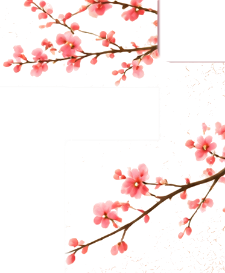
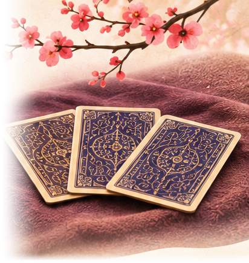
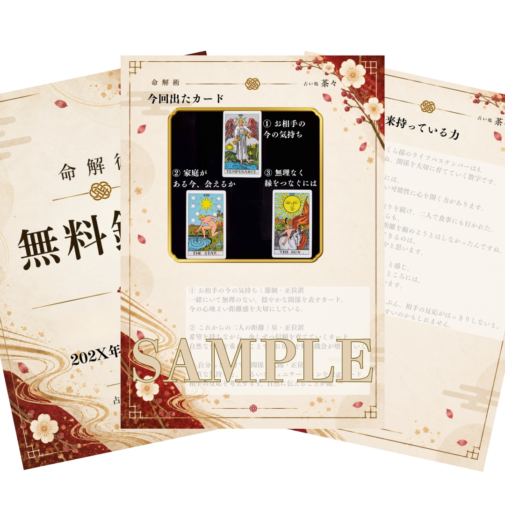
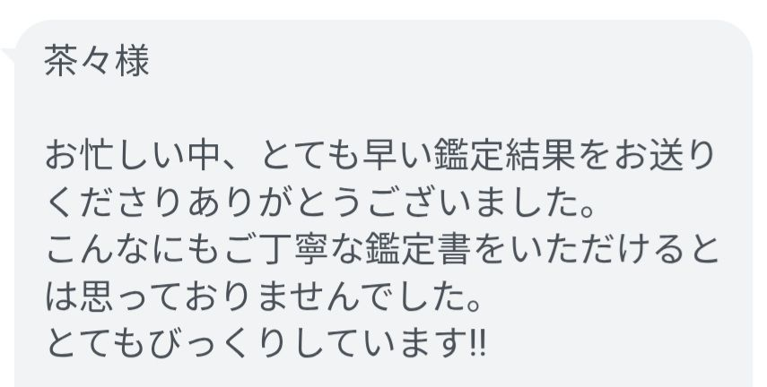
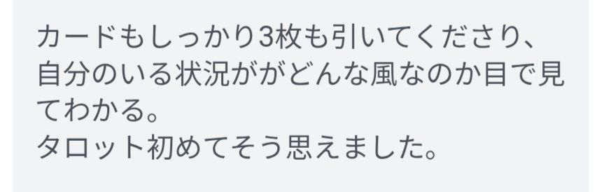
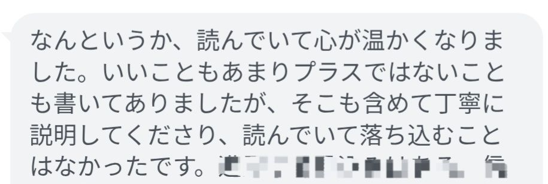
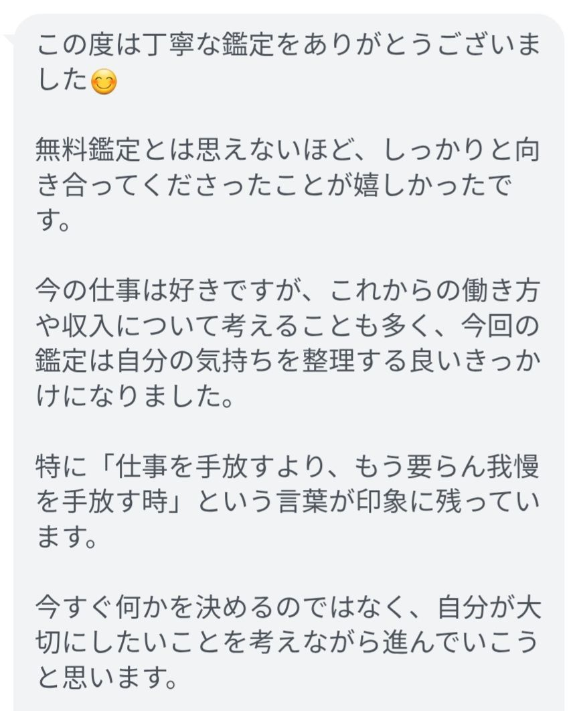
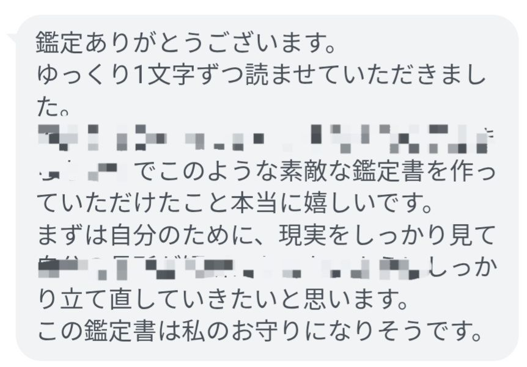

ひとりで抱え込んでしまう
そのお悩み、
少しだけ、お話してみませんか。
そのお悩み、
少しだけ、
数秘術 × タロット
独自の鑑定「命解術」
無料鑑定
命解術とは
生年月日から読み解く数秘術で、
あなたの性質や強みを捉え、
タロットカード3枚と掛け合わせて、
ご相談いただいた1つのお悩み（テーマ）を
3つの視点から丁寧に読み解く、
占い処 茶々の独自の鑑定です。
- 数秘術生年月日から
性質・強み・傾向
を知る - タロットカード3枚で
テーマを
3つの視点で
読み解く - 命解術1つのお悩みを
3つの視点で
丁寧に紐解く
無料鑑定で分かること
- 生年月日から分かるあなたの性質・強み・傾向
- ご相談いただいた1つのお悩み（テーマ）を
タロット3枚・3つの鑑定軸で読み解く - 今の状況に合わせた、日常で取り入れられるアドバイス
- 表紙を含めた全6〜8ページのPDF鑑定書でお届け
鑑定書サンプル SAMPLE

こんなお悩みに寄り添います
- 恋愛・復縁
- 仕事・働き方
- 人間関係
- ご自身の
気持ちの整理 - など
実際に受けた方のご感想
無料鑑定を受けた方から、LINEで実際に届いたメッセージです。お名前などの個人情報や、ご相談内容に関わる部分は伏せています。
丁寧な鑑定書への驚き

3枚のカードで状況が分かった

良いことも厳しいことも丁寧に

仕事の悩みと気持ちの整理

鑑定書がお守りに

※感想は個人の受け止め方であり、鑑定の結果や効果を保証するものではありません。
鑑定士茶々
数秘術とタロットを掛け合わせた「命解術」で、
あなたの気持ちに寄り添い、これからの選択を
考えるお手伝いをしています。
大切にしていること
未来を決めつけるのではなく、
ご自身の気持ちを整理し、
これからの一歩を考えるための鑑定です。
無料鑑定の
お申し込み方法
- LINEに登録
- ご相談内容と
生年月日をお知らせ - 鑑定する3つの軸を確認（タロット3枚で鑑定）
- PDFの鑑定書を
お届け
ただいま無料鑑定の受付を一時休止しています。再開はLINE公式でお知らせします。
LINEで無料鑑定を申し込むボタンを押すと、占い処 茶々のLINE公式へ移動します。友だち追加後、LINEの案内に沿ってお申し込みください。
- 料金は0円です。有料鑑定の購入は、お申し込みの条件ではありません。
- ご相談内容と生年月日を伺い、鑑定する3つの軸をご確認いただいてから制作します。
- 鑑定書をお届けするまでの期間は、お申し込み状況によって異なるため、受付時に個別にご案内します。
- 受付状況によって、募集を一時休止する場合があります。
- ご相談内容や個人情報は、鑑定に必要な範囲で取り扱います。
- 未成年の方への有料鑑定のご案内は行いません。
- 未来の出来事や他者の気持ちを確実に保証するものではありません。
- 医療・法律・投資などの専門的な判断に代わるものではありません。